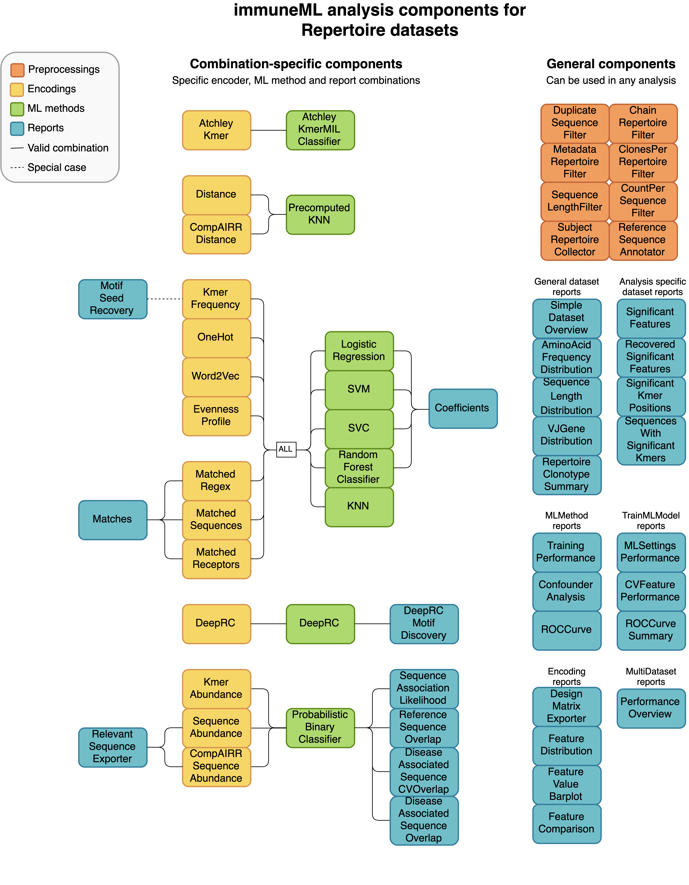
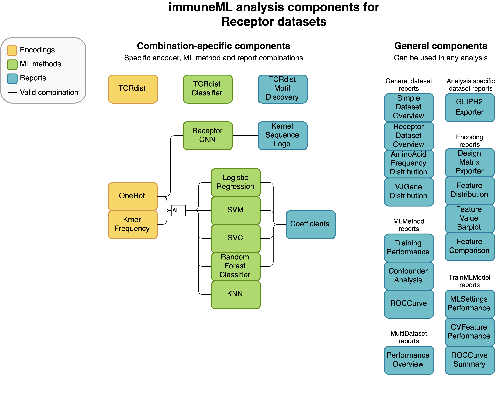
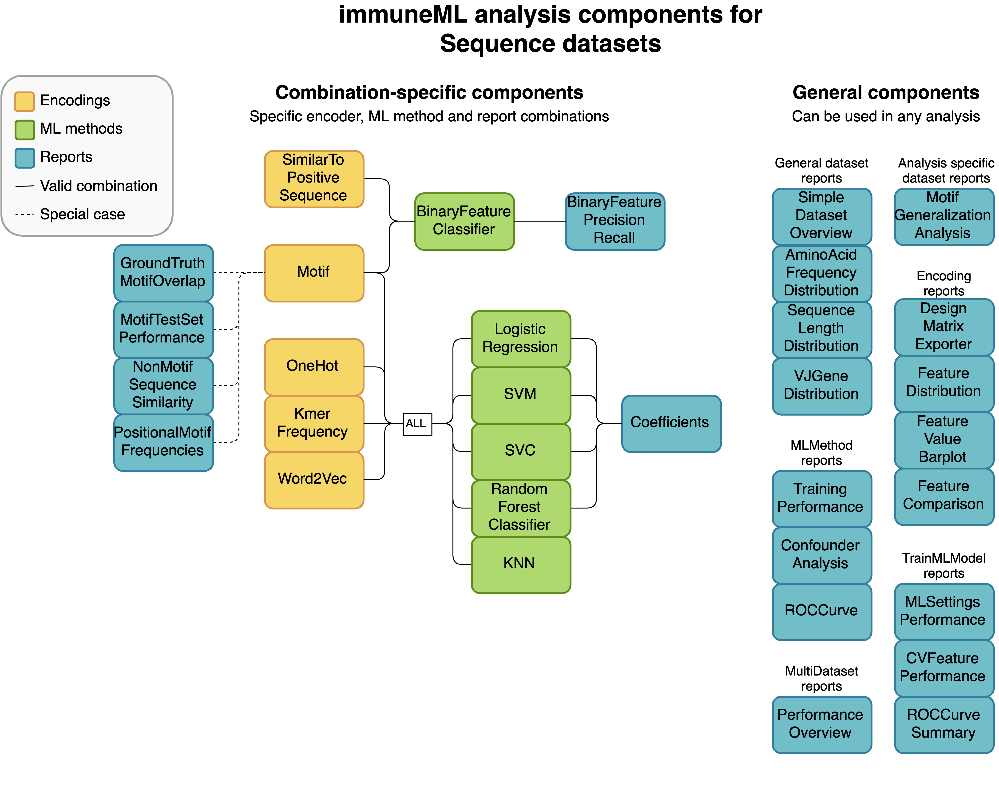

How to specify an analysis with YAML¶
Analyses in immuneML are specified through a YAML specification file. This is a text file with nested keys and values.
Since immuneML can be used for a variety of different tasks, different parameters need to be set depending on the use case.
The keys are essentially the input parameters to immuneML, except the values to these parameters can consist of more key-value pairs.
Throughout the documentation, the names of keys (which have a specific meaning) will be formatted like this.
Note
If you have not used YAML before, we recommend reading the official docs for an overview (https://yaml.org/spec/1.2.2/#chapter-2-language-overview) or any tutorial online. We also recommend using a YAML-friendly editor (Sublime Text, PyCharm or others) or an online YAML validator (https://jsonformatter.org/yaml-validator) to make sure your YAML file is correctly formatted.
The immuneML YAML specification reflects two main sets of keys:
Under
definitionsthe different analysis components are defined, such as a specific ML method, or the import parameters for a dataset.The
instructionsdescribe what kind of workflow is executed using the components defined under definitions. For example, whether to train ML models, or simulate a dataset for benchmarking.
This page gives a general overview of the YAML specification structure, and the keys that should be present. For an exhaustive list of all the options that can be specified, see YAML specification.
Structure of the analysis specification¶
The following figure outlines the general structure of the YAML specification file. Note that depending on the specific analysis,
the components and parameters that need to be specified may not be the same.
On the highest level, the analysis specification always consists of definitions and instructions.
Specifying Definitions¶
Under definitions, the following analysis components may be defined:
datasets: specifying where data is located, what format the data is in, and how it should be imported (see How to import data into immuneML for more details),preprocessing_sequences: defining one or more preprocessing steps to be taken on the dataset (this is optional),encodings: different data representations,ml_methods: different machine learning methods (e.g., SVM or KNN),reports: specific plots or statistics to apply to the raw or encoded data, ML methods or results.
Simulation-specific components (only relevant when running the Dataset simulation with LIgO) are:
motifs: parts of the simulation definition defined by a seed and a way to create specific motif instances from the seed,signals: parts of the simulation which can include multiple motifs and correspond to a single label for subsequent classification tasks,simulations: define how to combine different signals and how to implant them in the dataset.
Under definitions, each analysis sub-component is defined using a user-defined key. Throughout the documentation, we use the prefix ‘my_’ to identify these keys, but any kind of name may be used here. These keys are unique names that identify the settings for a component, and they are later referenced in the instructions.
An example of a full definitions section which may be used for a machine learning task is given below.
Note that in order to run this yaml file, instructions still need to be added
definitions.yaml
definitions: datasets: # every instruction uses a dataset my_dataset: format: AIRR params: path: path/to/data/ metadata_file: path/to/metadata.csv preprocessing_sequences: my_preprocessing: - my_beta_chain_filter: ChainRepertoireFilter: keep_chain: TRB ml_methods: my_log_reg: LogisticRegression my_svm: SVM encodings: my_kmer_freq_encoding_1: KmerFrequency # KmerFrequency with default parameters my_kmer_freq_encoding_2: # KmerFrequency with user-defined parameters KmerFrequency: k: 5 reports: my_seq_length_distribution: SequenceLengthDistribution instructions: # to be added...
The definitions section used for Simulation contains different components (motifs, signals, simulations).
These are discussed in more detail in the following tutorial: Dataset simulation with LIgO.
Specifying Instructions¶
Similarly to analysis components, instructions are defined under a user-defined key.
Under this key, you should define the instruction type, which defines the type
of analysis that will be done. All other settings are instruction-specific.
The following instruction types may be used:
and few others; Instructions for the complete list.
The components defined under definitions can be referenced inside the instruction, but any result from the instructions is not available to other instructions. If the output of one instruction needs to be used in another other instruction, two separate immuneML runs need to be made (e.g, running immuneML once with the Simulation instruction to generate a dataset, and subsequently using that dataset as an input to a second immuneML run to train a ML model).
An example of the YAML specification for the TrainMLModel instruction is shown below. See the tutorial How to train and assess a receptor or repertoire-level ML classifier for more explanation behind all settings.
instructions.yaml
definitions: # to be added... instructions: my_instruction: # user-defined instruction key type: TrainMLModel dataset: my_dataset # reference dataset from definitions labels: [disease] settings: # settings are made up of preprocessing (optional), ml_method and encoding - encoding: my_kmer_freq_encoding_1 ml_method: my_log_reg - preprocessing: my_preprocessing encoding: my_kmer_freq_encoding_2 ml_method: my_svm assessment: split_strategy: random split_count: 1 training_percentage: 70 reports: data_splits: [my_seq_length_distribution] selection: split_strategy: k_fold split_count: 5 strategy: GridSearch metrics: [accuracy] optimization_metric: accuracy reports: null # no reports refit_optimal_model: False number_of_processes: 4
Specifying output¶
Optionally, the key output may be specified on the base level (next to definitions and instructions). However,
the only supported output format is currently HTML. The output section may be omitted from the YAML, but if included, it should look like this:
output:
format: HTML
Putting all parts together¶
Not every analysis component can be combined with every component. Some analysis components are specific to a particular dataset type (receptor, sequence or repertoire dataset), and some components need to be used in a specific combination (such as encoder-ML method compatibility). The diagrams below show for each dataset type how the components can be combined.
  An example of a complete YAML specification for training an ML model through nested cross-validation is given here:
complete_definitions_instructions.yaml
definitions: datasets: d1: format: AIRR params: metadata_file: path/to/metadata.csv path: path/to/data/ preprocessing_sequences: my_preprocessing: - my_beta_chain_filter: ChainRepertoireFilter: keep_chain: TRB ml_methods: my_log_reg: LogisticRegression my_svm: SVM encodings: my_kmer_freq_encoding_1: KmerFrequency # KmerFrequency with default parameters my_kmer_freq_encoding_2: # KmerFrequency with user-defined parameters KmerFrequency: k: 5 reports: my_seq_length_distribution: SequenceLengthDistribution instructions: my_instruction: # user-defined instruction key type: TrainMLModel dataset: my_dataset # reference dataset from definitions labels: [disease] settings: # settings are made up of preprocessing (optional), ml_method and encoding - encoding: my_kmer_freq_encoding_1 ml_method: my_log_reg - preprocessing: my_preprocessing encoding: my_kmer_freq_encoding_2 ml_method: my_svm assessment: split_strategy: random split_count: 1 training_percentage: 70 reports: data_splits: [my_seq_length_distribution] selection: split_strategy: k_fold split_count: 5 strategy: GridSearch metrics: [accuracy] optimization_metric: accuracy reports: null # no reports refit_optimal_model: False number_of_processes: 4 output: format: HTML
Running the specified analysis¶
To run an instruction via command line with the given YAML specification file:
immune-ml path/to/specification.yaml result/folder/path/
Alternatively, create an ImmuneMLApp object in a Python script and pass it the path parameter to the constructor before calling its run() method as follows:
from immuneml.app.ImmuneMLApp import ImmuneMLApp
app = ImmuneMLApp(specification_path="path/to/specification.yaml", result_path="result/folder/path/")
app.run()